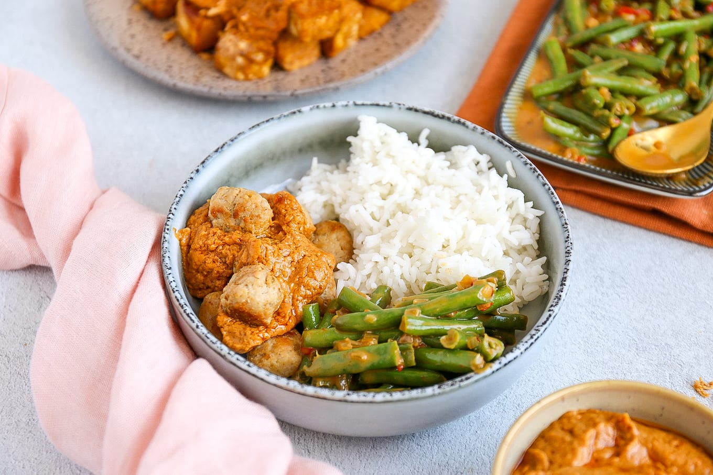

Kipballetjes rijst en pindasaus

Lekker en simpel, kipballetjes met zelfgemaakte pindasaus
Ingredienten 2 personen
- 150gr rijst
- 250 gram kipgehakt
- 1 sjalotje
- 1,5 theelepel kipkruiden
- paneermeel
- 3 eetlepels pindakaas
- 125ml water of kokosmelk
- 1 theelepel sambal
- 2 theelepel bruine bastardsuiker
- 2 theelepel ketjap manis
- limoensap
- *Voor groente bijv sperziebonen
Bereiding
- Kook de rijst volgens instructies op het pak
- Snipper het sjalotje
- Meng kipgehakt met kipkruiden, paneermeel, sjalotje.
- Draai balletjes van het kipgehakt
- Doe wat olie in de pan en bak de kipballetjes 5-10 minuten gaar en goudbruin
- Kook de groente beet gaar
zelfgemaakte satesaus
- Zet pannentje op vuur met 125ml kokosmelk
- voeg 3 eetlepels pindakaas toe en roer tot pindakaas gesmolten is
- voeg daarna 1tl sambal, 2tl bastardsuiker, 2el ketjap manis toe, en scheutje limoensap
- Breng het op smaak door iets meer te gebruiken of juist minder
Back to top of page
back to homepage